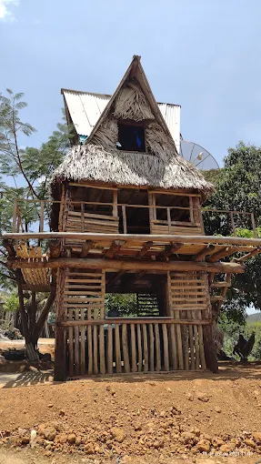
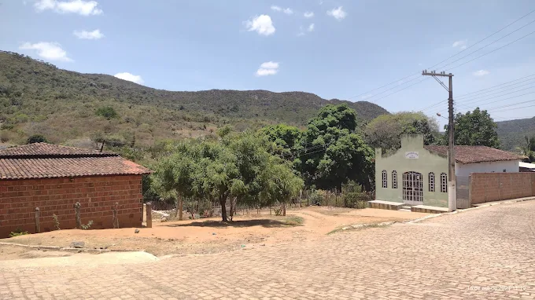

Casario típico do interior do sertão, com cores quentes e atmosfera acolhedora.
"Apenas um simples Povoado no interior do nordeste da Bahia.
Just a simple village in the northeast of Bahia."
"Muito bom melhor cidade da região"
"Lugar bom, mais as pessoas não são"
"Povo bom e acolhedor."

Casario típico do interior do sertão, com cores quentes e atmosfera acolhedora.

Trilhas naturais e paisagens verdes que cercam a comunidade rural.

O céu aberto e a vegetação típica do nordeste completam o cenário de Marota.
Carregando previsão do tempo...
Endereço: Rua Itiúba, 1 - Itiúba street - Marota
Pindobaçu - BA, 44774-300
Telefone: (73) 99841-0051
Horário de funcionamento: Aberto 24 horas
* Feriados (como a Páscoa) podem afetar o horário de funcionamento.